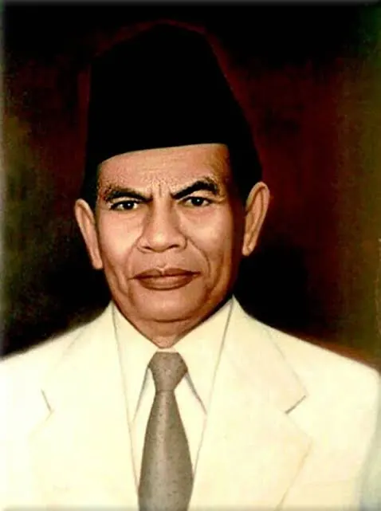

Yamin lahir dari pasangan Usman Baginda Khatib dan Siti Saadah. Ayahnya
adalah seorang pejabat terpandang yang bekerja sebagai Mantri Kopi
(koffiepakhuismeester) serta Kepala Adat di Minangkabau. Yamin memiliki
latar belakang keluarga intelektual; salah satu saudara seayahnya yang
terkenal adalah Djamaluddin Adinegoro, yang kelak menjadi wartawan
legendaris Indonesia.
Pada tahun 1934, Yamin menikah dengan
seorang wanita bangsawan Jawa bernama Raden Ajeng Siti Sundari Merto
Amodjo dan dikaruniai seorang putra bernama Dang Rahadian Sinayangsih
Yamin.